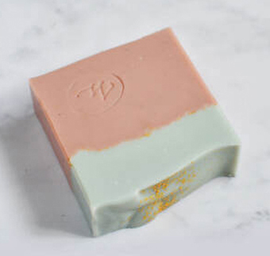

沙漠綠洲 天然礦泥冷製皂 混合性肌膚
摩洛哥泥 玫瑰草本香氣
░ 沙漠綠洲 ░ 冷製皂
夏日的炎熱，好適合使用使肌膚回到原生狀態的手工皂！
如同沙漠的綠洲，成為修復肌膚避難所。
/ 雙色皂款 /
❶ 綠藍色：藍礦泥 Blue Clay
❷ 粉紅色：摩洛哥泥 Moroccan Ghassoul Clay ＆粉紅礦泥 Pink Clay
色彩取自自然領域的多種保養膚質礦泥，
無添加豔色素顏色，在樸實中發現真正的華麗，
佐以溫和的草本與玫瑰草氣味，
由你自己來體驗發現這樣的好用皂款！
搭配冷製手工皂的多道製皂工藝，長時間熟成，
使這塊皂更能成為紓解身體與心情疲勞的療浴風景
各種季節都適合～
★主成份：
乳油木果脂，橄欖油, 芝麻油, 榛果油, 椰子油, 棕櫚油, 礦泥。純水,氫氧化鈉。
賦香：玫瑰草、薰衣草、佛手柑、迷迭香等天然植物精油，更著重輕亮的純粹植物精油香氣！
★用法：洗臉、全身沐浴。


JL House 的手工皂皆為出自設計工作室之原創商品，提供富含美感、不斷創新思考的獨特手工製自然生活沐浴產品。